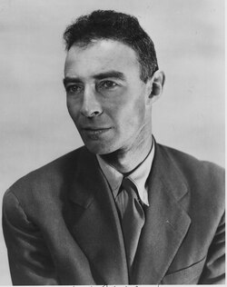

J. Robert Oppenheimer
Physicist, 1904 to 1967

Directed the Los Alamos laboratory that designed the first atomic bombs. 1
Open in the interactive Watcher
Related
- Manhattan Project
- Los Alamos Directed the Los Alamos lab
- Trinity test site Trinity test, July 1945
Sources
- J. Robert Oppenheimer Wikipedia